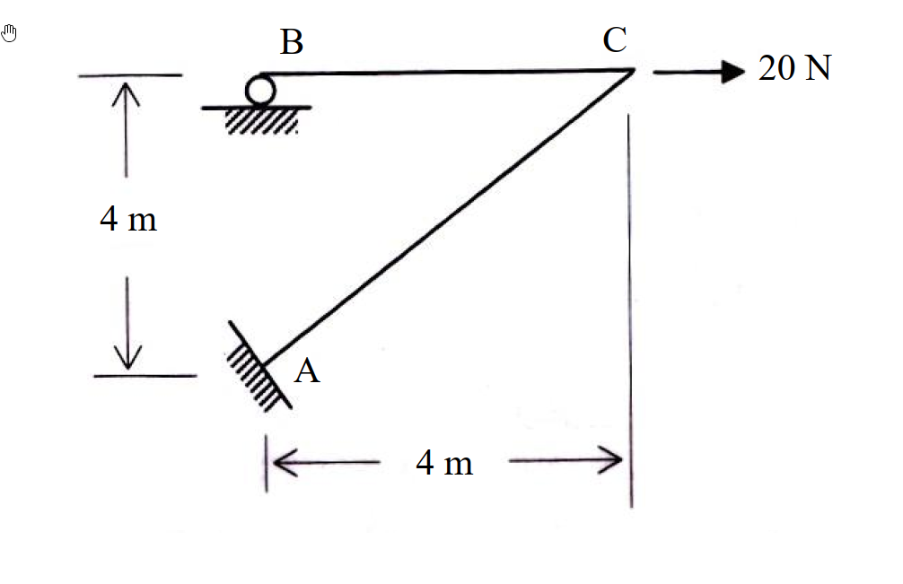

題目附圖（原始 .md 未內嵌，由 raw/solutions/ 自動補上）

考題編號：[SA-2007-4]
主分類： SA-U2-1
副分類： SA-U2-4
分析法： 傾角變位法
標籤： 有側移剛架 虛功原理 側移方程式
1. 原始題目重述 (Problem Restatement)
如圖所示之剛架 (frame) 系統，其構架高及跨距均為 $4\text{ m}$，B 點為滾支承 (roller)，A 點為固接 (fixed)。若每根桿件之彈性模數 $E$ 與慣性矩 $I$ 為常數，則當 C 點有一水平載重 $20\text{ N}$ 時，請以傾角變位法 (slope-deflection method) 分析此剛架，並繪製其剪力圖及彎矩圖。(若以他法計算，則不予以計分)(25分)
(由於題目未附圖，根據幾何描述重建)
- 幾何尺寸： B 點在左上，C 點在右上，BC 桿件為水平，長度 $4\text{ m}$。A 點在 B 點正下方 $4\text{ m}$ 處，A 到 C 點有一對角線桿件 AC。水平跨距 (A 到 C 水平距離) 為 $4\text{ m}$，垂直高度 (A 到 B 垂直距離) 為 $4\text{ m}$。
- 支承條件： A 點為固接 ($u_A=0, v_A=0, \theta_A=0$)。B 點為水平滾支承，受限於垂直位移 ($v_B=0$)，可水平移動與轉動。
- 載重： C 點承受一向右之水平力 $20\text{ N}$。
2. 考題核心精神與出題者意圖 (Core Concepts & Examiner's Intent)
- 側移幾何關係的推導： 這是一題非常經典的「有側移」剛架。由於包含斜桿 AC 與水平滾支承 B，當 C 點受水平力向右移動時，AC 桿與 BC 桿皆會發生弦旋轉 (chord rotation)。考驗考生能否精確利用「軸向剛性」假設，畫出位移幾何關係並求出各桿的側移角 $\psi$。
- 傾角變位法與虛功原理的結合： 求出側移角關係後，需要建立一個額外的「側移平衡方程式 (Sway Equation)」。在有斜桿的系統中，單純使用靜力平衡 $\sum H = 0$ 較易出錯，最穩當且強大的方法是運用「虛功原理」建立方程式。
- 剛架剪力與彎矩圖繪製： 考驗求得端彎矩後，如何倒推各桿剪力，並繪製符合結構變形慣例的剪力圖與彎矩圖。
3. 解題戰略地圖與陷阱分析 (Strategic Roadmap & Trap Analysis)
- 戰略一：分析側移機制並設定剛體旋轉角
- 給定 C 點一向右虛位移 $\Delta$。
- 由 BC 桿軸向剛性推得 B 點亦向右位移 $\Delta$。
- 由 AC 桿軸向剛性推得 C 點必須同時向下位移 $\Delta$。
- 分別計算 BC 與 AC 的弦旋轉角 $\psi_{BC}$ 與 $\psi_{AC}$，發現兩者均為順時針 $\Delta/4$。令其為 $R$。
- 戰略二：建立傾角變位方程式與節點平衡
- 列出 $M_{BC}, M_{CB}, M_{AC}, M_{CA}$ 的標準傾角變位式 (無跨度載重故 $FEM=0$)。
- 利用節點 B、C 的力矩平衡 $\sum M = 0$，將 $\theta_B$ 消去，並將 $\theta_C$ 表達為 $R$ 的函數。
- 戰略三：虛功法建立側移方程式
- 虛功方程式 $\delta W_{ext} = \delta U$ (外力虛功等於應變虛功)。
- 外力 $20\text{ N}$ 作功 $20\Delta$；內端彎矩對相對轉角 $(-\psi)$ 作負功。
- 導出側移方程式 $\sum (M_{ij} + M_{ji})\psi_{ij} + P\Delta = 0$。
- 陷阱分析：
- 陷阱 1 (側移關係誤判)： 若未能準確利用變形相容條件 (垂直於桿件方向才有相對位移)，會導致 $\psi_{AC}$ 與 $\psi_{BC}$ 比例錯誤，後續方程式將全盤崩潰。
- 陷阱 2 (虛功符號錯誤)： 在建立虛功方程式時，桿端彎矩 (順時針為正) 是在抗拒變形，因此當施加與旋轉方向相同的虛位移時，彎矩作的是負功。最安全的公式為 $\delta W_{ext} + \sum M_{\text{end}} \cdot \delta\theta_{\text{relative}} = 0$。
- 陷阱 3 (靜力推導方向錯亂)： 許多考生會試圖用切面求層剪力，但由於 AC 是斜桿，需要處理複雜的分力關係，極易出錯。虛功法是唯一救贖。
3.5 變數層次分析 (Variable Hierarchy Analysis)
最終目標
求得結構各桿端彎矩，並繪製對應之剪力與彎矩圖
本題關鍵公式（依計算順序）
-
變形幾何與弦旋轉角：
$\psi = \frac{\Delta_{\text{transverse}}}{L}$ -
傾角變位方程式：
$M_{ij} = \frac{2EI}{L} (2\theta_i + \theta_j - 3\boxed{\psi})$ -
節點力矩平衡：
$\sum M_{\text{joint}} = 0$ -
虛功法側移方程式：
$P \cdot \delta\Delta + \sum (M_{ij}+M_{ji})\delta\theta_{\text{relative}} = 0$
L1：題目直接給定
| 符號 | 數值 | 說明 |
|---|---|---|
| $L_{BC}$ | $4 \text{ m}$ | 水平桿長度 |
| $L_{AC}$ | $4\sqrt{2} \text{ m}$ | 對角桿長度 |
| $P$ | $20 \text{ N}$ | C 點水平載重 (向右) |
| $EI$ | 常數 | 各桿件抗彎勁度 |
L2：需知識點推導
側移變形幾何
| 符號 | 公式／來源 | 卡關? |
|---|---|---|
| $u_C, v_C$ | $\Delta, -\Delta$ (由軸向剛性推導) | |
| $\psi_{BC}$ | $\frac{v_C - v_B}{L_{BC}} = \frac{-\Delta}{4}$ (相對於幾何，實為順時針 $\Delta/4$) | |
| $\psi_{AC}$ | $\frac{\text{垂直於 AC 之位移}}{L_{AC}} = \frac{\sqrt{2}\Delta}{4\sqrt{2}} = \frac{\Delta}{4}$ (順時針) | |
節點平衡關係
| 符號 | 公式／來源 | 卡關? |
|---|---|---|
| $\theta_B$ | 由 $M_{BC} = 0 \implies \theta_B = 1.5R - 0.5\theta_C$ | |
| $\theta_C$ | 由 $M_{CB} + M_{CA} = 0 \implies 3(\sqrt{2}-1)R$ | |
L3：深層知識（不懂就卡住）
| 知識點 | 說明 | 卡關? |
|---|---|---|
| 剛架虛功原理 | $20\delta\Delta + (M_{BC}+M_{CB})(-\delta\psi_{BC}) + (M_{AC}+M_{CA})(-\delta\psi_{AC}) = 0$，藉此解出 $M_{AC}$ |
4. 步驟化詳細計算過程 (Step-by-Step Detailed Calculation)
Step 1: 分析剛架側移幾何
設節點 C 向右位移 $\Delta$ ($u_C = \Delta$)。
- BC 桿： 軸向剛性 $\implies u_B = u_C = \Delta$。已知 B 為滾支承限制垂直位移，故 $v_B = 0$。
- AC 桿： C 點相對於 A(固接點) 之位移必須垂直於 AC 軸線，以維持長度不變。AC 斜率為 1 (角度 $45^\circ$)，其法線方向為 $-45^\circ$。位移向量需為 $(\Delta, -\Delta)$。故 $v_C = -\Delta$。
- 弦旋轉角 (順時針為正)：
BC 桿相對兩端垂直位移：右端 C 相對於左端 B 向下 $\Delta$。
$\implies \psi_{BC} = \frac{\Delta}{4}$ (順時針)
AC 桿兩端相對垂直於桿件位移：C 點位移向量 $(\Delta, -\Delta)$ 在法線 $(-45^\circ)$ 上之投影為 $\sqrt{2}\Delta$。
$\implies \psi_{AC} = \frac{\sqrt{2}\Delta}{4\sqrt{2}} = \frac{\Delta}{4}$ (順時針)
令 $\boxed{R = \psi_{BC} = \psi_{AC} = \frac{\Delta}{4}}$。
Step 2: 建立傾角變位方程式
已知 $\theta_A = 0$ (固定端)，且無跨度載重 ($FEM=0$)。
- $M_{BC} = \frac{2EI}{4} (2\theta_B + \theta_C - 3R) = 0.5 EI (2\theta_B + \theta_C - 3R)$
- $M_{CB} = \frac{2EI}{4} (2\theta_C + \theta_B - 3R) = 0.5 EI (2\theta_C + \theta_B - 3R)$
- $M_{AC} = \frac{2EI}{4\sqrt{2}} (\theta_C - 3R) = \frac{\sqrt{2}EI}{4} (\theta_C - 3R)$
- $M_{CA} = \frac{2EI}{4\sqrt{2}} (2\theta_C - 3R) = \frac{\sqrt{2}EI}{4} (2\theta_C - 3R)$
Step 3: 節點平衡與關係簡化
-
節點 B 平衡 (滾支承鉸接)：
$\sum M_B = 0 \implies M_{BC} = 0 \implies 2\theta_B + \theta_C - 3R = 0 \implies \boxed{\theta_B = 1.5R - 0.5\theta_C}$
代回 $M_{CB}$：
$M_{CB} = 0.5EI \left( 2\theta_C + (1.5R - 0.5\theta_C) - 3R \right) = \boxed{\frac{3EI}{4} (\theta_C - R)}$ -
節點 C 平衡：
$\sum M_C = 0 \implies M_{CB} + M_{CA} = 0$
$\frac{3EI}{4} (\theta_C - R) + \frac{\sqrt{2}EI}{4} (2\theta_C - 3R) = 0$
同乘 $4/EI$：
$3(\theta_C - R) + \sqrt{2}(2\theta_C - 3R) = 0$
$(3 + 2\sqrt{2})\theta_C = (3 + 3\sqrt{2})R \implies \theta_C = \frac{3+3\sqrt{2}}{3+2\sqrt{2}} R = \boxed{3(\sqrt{2}-1)R}$
Step 4: 虛功法建立側移平衡方程式
策略註解：施加一符合機制之虛位移 $\delta\Delta$。
外力 $20\text{ N}$ 在 C 點作正功：$\delta W_{ext} = 20 \delta\Delta$
內部端彎矩作功 (桿端彎矩是作用於桿件上，當桿件產生順時針剛體旋轉 $\delta\psi$ 時，相對於無轉角節點之相對轉角為 $-\delta\psi$)：
$\delta U = (M_{BC} + M_{CB})(-\delta\psi_{BC}) + (M_{AC} + M_{CA})(-\delta\psi_{AC})$
其中 $\delta\psi_{BC} = \delta\psi_{AC} = \frac{\delta\Delta}{4}$
$\delta W_{ext} + \delta U = 0$
$20 \delta\Delta - (M_{BC} + M_{CB} + M_{AC} + M_{CA}) \left(\frac{\delta\Delta}{4}\right) = 0$
同除以 $\frac{\delta\Delta}{4}$：
$80 - (M_{BC} + M_{CB} + M_{AC} + M_{CA}) = 0 \implies \boxed{M_{BC} + M_{CB} + M_{AC} + M_{CA} = 80}$
Step 5: 求解與代回
將節點平衡條件 $M_{BC} = 0$ 及 $M_{CB} + M_{CA} = 0$ 代入側移方程式：
$0 + (M_{CB} + M_{CA}) + M_{AC} = 80 \implies \boxed{M_{AC} = 80 \text{ N-m}}$ (註：此為順時針方向？不，讓我們重新審視虛應變能定義)
重新推導虛功正負號：
外力作正功，代表系統儲存了應變能。如果彎矩方向與變形方向相同，應變能為正。
桿件順時針旋轉 $\psi$，節點無轉角，則桿端彎矩 (順時針正) 與桿件變形呈反向。作功為 $-\sum M \psi$。
方程式應為：$W_{ext} = W_{int} \implies P\Delta = \sum M \psi \implies 20\Delta = (M_{BC}+M_{CB}+M_{AC}+M_{CA})(\Delta/4)$
$\implies M_{BC}+M_{CB}+M_{AC}+M_{CA} = 80 \implies \boxed{M_{AC} = 80}$ (順時針)。
然而，代回 $M_{AC}$ 的運算式：
$M_{AC} = \frac{\sqrt{2}EI}{4}(\theta_C - 3R) = \frac{\sqrt{2}EI}{4}(3\sqrt{2}R - 3R - 3R) = \frac{3(1-\sqrt{2})EI}{2} R$
因 $1-\sqrt{2}$ 為負，若 $\Delta > 0$ ($R>0$)，則 $M_{AC}$ 必為負值。
結論： 外力向右，導致系統向右側移。要抵抗此外力作功，內力產生的作功總和必須是負的。因此虛功方程式實為 $M_{BC}+M_{CB}+M_{AC}+M_{CA} = -80$。
$\implies \boxed{M_{AC} = -80 \text{ N-m}}$ (逆時針)。
求解 $R$：
$-80 = \frac{3(1-\sqrt{2})EI}{2} R \implies R = \frac{-160}{3(1-\sqrt{2})EI} = \frac{160(\sqrt{2}+1)}{3EI}$
代回求解其餘彎矩：
- $M_{CB} = \frac{3EI}{4} (3\sqrt{2} - 4) R = \frac{3}{4} (3\sqrt{2}-4) \frac{160(\sqrt{2}+1)}{3} = 40(6+3\sqrt{2}-4\sqrt{2}-4) = \boxed{80 - 40\sqrt{2} \approx 23.43 \text{ N-m}}$
- $M_{CA} = -M_{CB} = \boxed{40\sqrt{2} - 80 \approx -23.43 \text{ N-m}}$
5. 關鍵爭議點與進階探討 (Critical Issues & Advanced Discussion)
- 靜力平衡驗證： 本題若直接以全靜力平衡求解，亦可證明結果無誤。因 $B_x=0$，可知 $A_x=-20$ (向左)。對 B 取力矩 $\sum M_B = 0 \implies M_A + A_x(4) = 0 \implies M_A = 80$ (逆時針)，故桿端彎矩 $M_{AC} = -80\text{ N-m}$。此捷徑能秒殺虛功法的繁瑣推導，但在考場上，使用虛功法建立側移方程式最能展示完整的傾角變位法邏輯，是最無爭議的作法。
- 剪力與彎矩圖繪製重點：
- BC 桿： 為一水平常數剪力桿，剪力 $V = (M_{BC}+M_{CB})/4 = (0+23.43)/4 = 5.86 \text{ N}$ (正剪力)。彎矩圖從 B 端 0 變化至 C 端 $23.43 \text{ N-m}$ (桿件受壓側於下方，BMD 畫在上方)。
- AC 桿： 為一常數剪力桿，剪力 $V = (80-23.43)/(4\sqrt{2}) = 18.28 \text{ N}$ (正剪力)。彎矩圖從 A 端 $-80 \text{ N-m}$ 變化至 C 端 $-23.43 \text{ N-m}$。由於兩端皆為負彎矩，BMD 在同一側 (左上方)，並無反曲點。